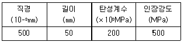
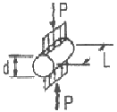
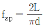
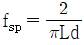
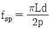
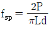
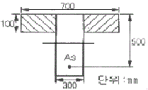

콘크리트산업기사 (2006-08-06 기출문제)
1과목: 콘크리트재료 및 배합
1. 경량골재 및 경량골재 콘크리트에 대한 설명 중 잘못된 것은?
- 경량골재를 생산과정에 의해서 분류할 경우 일반적으로 인공경량골재, 천연경량골재, 제철소 등에서 산출되는 부산경량골재 등으로 분류할 수 있다.
- 경량골재 콘크리트는 열전도율, 열확산률이 낮다.
- 경량골재 콘크리트는 갇힌 공기량이 커지기 때문에 동결융해 저항성이 우수하다.
- 경량골재 콘크리트의 공기량은 보통골재를 사용한 콘크리트보다 1%크게 해야 한다.
(정답률: 알수없음)

2. 절대건조 상태에서 350g의 잔골재 시료가 흡수 후 표면건조포화 상태에서 364g, 공기중 건조상태에서는 357g이 되었다. 이 시료의 흡수율은?
- 2%
- 3%
- 4%
- 5%
(정답률: 60%)
3. 다음의 콘크리트 배합에 관한 일반적인 사항 중 잘못된 것은?
- 콘크리트의 운반시간이 길거나 기온이 높을 때에는 슬럼프가 크게 저하하므로, 배합은 운반중의 슬럼프 저하를 고려한 슬럼프값으로 정해야 한다.
- 고강도콘크리트의 배합은 기상변화가 심하거나 동결융해에 대한 대책이 필요한 경우를 제외하고는 AE제를 사용하지 않는 것을 원칙으로 한다.
- 공사 중에 잔골재의 조립률이 ±0.2 이상 차이가 있을 경우에는 콘크리트의 워커빌리티가 변하므로 배합을 수정할 필요가 있다.
- 굵은골재 최대치수는 철근의 최소 순간격의 3/4 이하이어야 하며, 콘크리트를 경제적으로 만들기 위해서는 최대치수가 작은 굵은골재를 사용하는 것이 유리하다.
(정답률: 알수없음)
4. 다음 중 일반적인 콘크리트 시방배합표에 표시되지 않는 사항은?
- 슬럼프의 범위
- 물-시멘트비
- 잔골재율
- 골재의 조립률
(정답률: 알수없음)
5. 콘크리트용 골재에 대한 시험이 아닌 것은?
- 체가름 시험
- 공기량 시험
- 안정성 시험
- 유기불순물 시험
(정답률: 알수없음)
6. 다음은 시멘트의 특성과 용도에 관하여 설명한 것이다. 틀린 것은?
- 중용열 포틀랜드 시멘트는 초기강도는 작지만 장기강도가 크고, 댐 등의 매스콘크리트에 사용되고 있다.
- 조강 포틀랜드 시멘트는 조기에 높은 강도를 얻을 수 있어 한중콘크리트에 사용되고 있다.
- 고로 슬래그 시멘트는 장기재령에서 수밀성이 우수하여 하천공사 및 항만공사 등에 사용되고 있다.
- 내황산염 포틀랜드 시멘트는 토양이나 공장폐수 등의 황산염에 대한 저항성을 높이기 위하여 C3A의 함유량을 높이고 C2S의 양을 줄여 만든 것이다.
(정답률: 알수없음)
7. 다음 중 AE감수제의 사용효과로써 옳지 않은 것은?
- 동결융해 저항성의 증진
- 투수성의 증가
- 건조수축 감소
- 단위시멘트량을 줄일 수 있음
(정답률: 알수없음)
8. 굳지 않은 콘크리트의 품질을 개선시키기 위하여 사용되는 감수제에 대한 설명 중 옳은 것은?
- 시멘트 입자를 분산시켜 워커빌리티를 개선하는 계면활성제이다.
- 소요 워커빌리티를 얻는데 콘크리트의 단위수량이 10~15% 증가한다.
- 단위수량이 증가하므로 콘크리트의 건조수축이 커지게 된다.
- 동일한 워커빌리티를 얻는데 단위시멘트량이 감소하므로 압축강도가 감소한다.
(정답률: 알수없음)
9. 섬유보강 콘트리트용으로 사용하고자 하는 강섬유의 물리적 특성이 다음과 같을 때, 이 섬유의 아스펙트비(형상비)는?

- 0.1
- 0.25
- 100
- 400
(정답률: 30%)
10. 플라이 애쉬를 사용한 콘크리트의 성질에 관한 다음의 일반적인 설명 중 적당하지 않은 것은?
- 플라이 애쉬 중의 미연탄소분에 의해 공기연행제 등이 분산되는 효과가 있어 소요의 공기량을 연행하기 위한 공기연행제의 사용량을 줄일 수 있다.
- 시멘트 질량의 20% 정도 이상을 플라이 애쉬로 치환하면 알칼리 골재반응이 억재된다.
- 습윤양생이 충분하지 못하면 초기강도의 저하 및 동해에 대한 표면열화가 발생하기 쉽다.
- 수화가 충분히 진행되면 치밀한 조직이 가능하기 때문에 해수에 대한 저항성이 커진다.
(정답률: 알수없음)
11. 콘크리트의 배합에서 단면이 큰 철근콘크리트의 슬럼프 표준값으로 가장 옳은 것은?
- 80~150㎜
- 60~120㎜
- 50~100㎜
- 100~150㎜
(정답률: 50%)
12. 콘크리트의 배합조건을 변경할 경우, 슬럼프의 변화에 관한 일반적인 경향에 대한 설명 중 틀린 것은?
- 조립률이 큰 잔골재로 변경하며, 슬럼프는 작아진다.
- 최대치수가 큰 굵은골재로 변경하면, 슬럼프는 커진다.
- 잔골재율을 크게하면, 슬럼프는 작아진다.
- 공기량을 증가시키면, 슬럼프는 커진다.
(정답률: 알수없음)
13. KS F 2508 로스앤젤레스 시험기에 의한 굵은골재의 마모시험에서 사용시료의 등급이 A인 경우 사용철구 수와 철구의 총 질량(g)이 맞는 것은?
- 12개, 5000±25(g)
- 11개, 5000±25(g)
- 12개, 4580±25(g)
- 11개, 4580±25(g)
(정답률: 알수없음)
14. 다음 중 시멘트 클링커 화합물의 조성광물로 틀린 것은?
- 규산석회(CaOㆍSiO2)
- 규산 2석회(2CaOㆍSiO2)
- 알루민산 3석회(3CaOㆍAl2O3)
- 알루민철산 4석회(4CaOㆍAl2O3ㆍFe2O3)
(정답률: 40%)
15. 알루미나 시멘트의 특성에 관한 다음 사항 중에서 옳지 않은 것은?
- 포틀랜드시멘트에 비하여 빨리 응결하는 특성을 갖는다.
- 응결 및 경화시 발열량이 적다.
- 석회분이 작기 때문에 화학적 저항성이 크고 내구성도 크나 가격이 고가이다.
- 초조강성시멘트로 초기강도가 커서 보통포틀랜드시멘트의 28일 강도를 24시간에 낼 수 있다.
(정답률: 60%)
16. 골재의 조립률 계산에 필요한 체가 아닌 것은?
- 0.15㎜
- 0.5㎜
- 1.2㎜
- 2.5㎜
(정답률: 알수없음)
17. 다음의 시멘트 시험항목에 대한 관련장치로서 적절하게 연결된 것은?
- 비중시험-비카트침
- 압축강도-르샤틀리에 플라스크
- 분말도-45㎛ 표준체
- 응결시간-블레인 공기투과장치
(정답률: 알수없음)
18. 콘크리트 배합설계시 물-시멘트비를 결정하는 요인이 아닌 것은?
- 압축강도
- 내구성
- 균열저항성
- 공기량
(정답률: 알수없음)
19. KS L 5110 의하여 시멘트 비중시험을 실시한 결과, 르샤틀리에 비중병에 광유를 주유하고 측정한 눈금이 0.6mL이었다. 이 비중병에 시멘트 64g을 넣고 광유가 올라온 눈금을 측정한 결과 21.25mL를 얻었다. 시멘트의 비중은 얼마인가?
- 3.⑤
- 3.10
- 3.15
- 3.20
(정답률: 알수없음)
20. 체가름 시험결과 잔골재 조립률 2.65, 굵은골재 조립률 7.38이며 잔골재 대 굵은골재비를 1:1.6으로 할 때 혼합골재의 조립률은?
- 4.56
- 5.56
- 6.56
- 7.56
(정답률: 알수없음)
2과목: 콘크리트제조, 시험 및 품질관리
21. 휨강도를 측정하기 위하여 15×15×55㎝ 각주형 공시체를 제작할 때 콘크리트는 2층으로 나누어 채우며 각 층에 대한 다짐횟수는 몇 회인가?
- 10회
- 25회
- 50회
- 83회
(정답률: 34%)
22. 블리딩에 영향을 미치는 인자 중 옳지 않은 것은?
- 시멘트의 분말도가 클수록 블리딩은 작아진다.
- 시멘트의 응결시간이 짧을수록 블리딩이 감소한다.
- 잔골재의 조립률이 크고 잔골재율이 크면 블리딩이 증가한다.
- 과도한 진동다짐을 하거나 치기속도가 빠르면 블리딩이 증가한다.
(정답률: 알수없음)
23. 콘크리트의 워커빌리티에 영향을 미치는 요인이 아닌 것은?
- 시멘트량
- 단위수량
- 혼화재료 사용량
- 양생기간
(정답률: 알수없음)
24. 콘크리트의 휨강도 시험에서 최대하중 34.2kN에서 공시체가 파괴되었다. 이 콘크리트 공시체의 휨강도는 얼마인가? (단, 150×150×530㎜ 공시체이고 지간은 450㎜이고, 공시체가 인장쪽 표면 지간방향 중심선의 3등분 사이에서 파괴되었다.)
- 3.98MPa
- 4.56MPa
- 4.78MPa
- 5.12MPa
(정답률: 알수없음)
25. 콘크리트의 제조공정에 있어서의 검사에 관한 설명으로 바르지 못한 것은?
- 시방배합은 공사중 적절히 실시하는 것이 원칙이다.
- 잔골재의 조립률은 1일 1회 이상 실시한다.
- 굵은골재의 조립률은 1일1회 이상 실시한다.
- 잔골재의 표면수율은 1일 1회 이상 실시한다.
(정답률: 알수없음)
26. 내구성이 양호한 콘크리트를 얻기 위한 방법으로 잘못된 것은?
- 워커빌리티를 높게
- 물-시멘트비를 낮게
- 최소한 습도손실
- 완전한 혼합
(정답률: 알수없음)
27. 콘크리트 표준시방서에 규정한 1회의 계량분에 대한 재료 계량오차의 허용범위를 설명한 것으로 잘못된 것은?
- 물-1%
- 시멘트-1%
- 혼화제-2%
- 골재-3%
(정답률: 알수없음)
28. 다음 그림과 같은 콘크리트의 쪼갬 인장강도시험에서 인장강도(fsp)를 구하는 공식으로 올바른 것은? (단, 공시체의 직경은 d, 최대하중은 P, 공시체의 길이는 L, 원주율은 π)





(정답률: 알수없음)
29. 압력법에 의한 공기량 시험법에서 허용되는 최대 골재크기는?
- 75㎜
- 40㎜
- 35㎜
- 30㎜
(정답률: 알수없음)
30. 유동화 콘크리트의 이점 및 효과가 아닌 것은?
- 단위수량 저감
- 건조수축 감소
- 콘크리트 압송성 향상
- 수화발열량 증가
(정답률: 알수없음)
31. 강제식 믹서로 콘크리트의 비비기를 할 경우, 최소 비비기 시간은 얼마를 표준으로 하는가? (단, 비비기시간에 대한 시험을 실시하지 않을 경우)
- 30초
- 1분
- 1분 30초
- 2분
(정답률: 알수없음)
32. 정비된 콘크리트 제조설비를 갖춘 공장으로부터 수시로 구입할 수 있는 굳지 않은 콘크리트를 무엇이라고 하는가?
- 일반콘크리트
- 매스 콘크리트
- 레디믹스트 콘크리트
- 숏크리트
(정답률: 60%)
33. 다음 중 경화한(굳은) 콘크리트의 성질이 아닌 것은?
- 강도
- 변형
- 균열
- 반죽질기
(정답률: 알수없음)
34. 콘크리트 압축강도 시험에서 직경 15㎝, 높이 30㎝인 원주형 공시체를 사용한 경우, 최대압축하중 430kN에서 공시체가 파괴되었다면 압축강도는 얼마인가?
- 21.2MPa
- 24.3MPa
- 26.5MPa
- 28.1MPa
(정답률: 알수없음)
35. 모집단에 대한 품질 특성을 알기 위하여 모집단의 분포상태, 분포의 중심위치, 분포의 산포 등을 쉽게 파악할 수 있도록 막대그래프 형식으로 작성한 도수분포도를 무엇이라고 하는가?
- 산포도
- 히스토그램
- 층별
- 파레토도
(정답률: 알수없음)
36. 콘크리트의 동해 및 내동해성에 관한 설명 중 잘못된 것은?
- 흡수율이 큰 골재를 사용하면 동해를 일으키기 쉽다.
- 공기연행제를 사용하면 내동해성을 향상시키는데 큰 효과가 있다.
- 건습반복을 받는 부재가 건조상태로 유지되는 부재에 비해 동해를 일으키기 쉽다.
- 물-시멘트비가 큰 콘크리트를 사용하면 동해를 작게 할 수 있다.
(정답률: 알수없음)
37. 콘크리트의 슬럼프 시험방법에 대하여 적당하지 않은 것은?
- 슬럼프 콘은 상부 안지름 10㎝, 하부 안지름 20㎝, 높이 30의 강제콘을 사용한다.
- 슬럼프 콘은 수평으로 설치한 강으로 수밀성이 있는 평판위에 놓고 누르고, 시료를 거의 같은 양의 3층으로 나눠서 채운다.
- 각층의 콘크리트를 채운 다음 다짐대로 고른 후 25회 균등하게 다진다.
- 슬럼프 콘을 들어올리는 시간은 높이 30㎝에서 10초 정도로 한다.
(정답률: 알수없음)
38. 콘크리트 크리프에 영향을 주는 요인에 대한 설명으로 잘못된 것은?
- 하중이 실릴 때의 콘크리트의 지령이 클수록 크리프는 작게 일어난다.
- 물-시멘트비가 큰 콘크리트는 물-시멘트비가 작은 콘크리트보다 크리프가 크게 일어난다.
- 크리프 변형의 증가비율은 시간의 경과와 더불어 급격히 증가한다.
- 콘크리트가 놓이는 주위의 온도가 높을수록 크리프 변형은 커진다.
(정답률: 알수없음)
39. 다음 중 일반적인 콘크리트 강도의 비파괴 시험방법에 해당하지 않는 것은?
- 반발경도에 의한 방법
- 평판재하법
- 초음파법
- 음향방출법
(정답률: 알수없음)
40. 압축강도에 의한 일반콘크리트의 품질검사에 관한 설명 중 옳지 않은 것은?
- 각각의 압축강도 시험값이 설계기준강도보다 5.0MPa에 미달하는 확률이 1% 이하이어야 한다.
- 3회 연속한 압축강도 시험값의 평균이 설계기준강도에 미달하는 확률이 1% 이하이어야 한다.
- 1회/일, 또는 100m3마다 1회, 배합이 변경될 때마다 압축강도시험을 실시한다.
- 압축강도에 의한 콘크리트 품질관리는 일반적인 경우 조기재령에 있어서의 압축강도에 의해 실시한다.
(정답률: 알수없음)
3과목: 콘크리트의 시공
41. 수중콘크리트의 단위시멘트량의 기준을 올바르게 나타낸 것은? (단, 일반수중콘크리트에 한한다.)
- 단위시멘트량 : 370㎏/m3 이상
- 단위시멘트량 : 370㎏/m3 미만
- 단위시멘트량 : 350㎏/m3 이상
- 단위시멘트량 : 350㎏/m3 미만
(정답률: 알수없음)
42. 해양콘크리트에 대한 설명 중 적절하지 못한 것은?
- 철근 피복두께는 보통콘크리트 구조물보다 크게 한다.
- 내구성을 고려하여 정한 최대 물-시멘트비는 보통콘크리트 구조물보다 작게 할 필요가 있다.
- 보통 포틀랜드 시멘트를 사용한 콘크리트는 적어도 재령 5일이 될 때까지 해수에 직접 접촉되지 않도록 한다.
- 해수의 작용에 대하여 내구성이 높은 고로 슬래그 시멘트를 사용하면 초기양생기간을 단축시킬 수 있다.
(정답률: 알수없음)
43. 다음은 숏크리트에서 리바운드율을 저감하기 위한 대책이다. 옳지 않은 것은?
- 노즐을 뿜어 붙일 면에 직각이 되도록 유지한다.
- 건식공법을 사용한다.
- 숙련된 노즐맨(nozzle man)이 작업토록 한다.
- 뿜는 압력을 일정하게 한다.
(정답률: 70%)
44. 뿜어 붙이기 콘크리트(shotcrete)에 대한 설명 중 옳지 않은 것은?
- 임의방향으로 시공 가능하고 재료의 손실이 많다.
- 수밀성이 적고 작업시 분진이 생길 수 있다.
- 거푸집이 불필요하며 급속시공이 가능하다.
- 콘크리트 접착면에서 용수 발생시 부착이 용이하다.
(정답률: 알수없음)
45. 서중콘크리트에서 기온이 높아짐에 따라 발생할 수 있는 문제점이 아닌 것은?
- 운반 중의 콘크리트 슬럼프 저하
- 콜드 조인트(cold joint)의 발생
- 연행공기량의 증가
- 표면 수분의 급격한 증발에 따른 균열발생
(정답률: 알수없음)
46. 고강도콘크리트의 제조에 필수적으로 필요한 혼화제로써 물-시멘트비가 낮은 콘크리트 배합의 워커빌리티를 개선하는데 가장 크게 기여하는 것은?
- 실리카 퓸
- 촉진제
- 고성능감수제
- 플라이 애쉬
(정답률: 알수없음)
47. 매스콘크리트의 타설온도를 낮추는 방법으로 물, 골재 등의 재료를 미리 냉각시키는 방법을 무엇이라 하는가?
- 파이프 쿨링
- 트래미 방법
- 콜드 조인드
- 프리쿨링
(정답률: 42%)
48. 고강도 콘크리트에 대한 다음의 기술내용 중 잘못된 것은?
- 고강도 콘크리트의 설계기준강도는 일반콘크리트에서는 40MPa 이상, 경량콘크리트에서는 25MPa 이상으로 규정하고 있다.
- 물-시멘트비는 일반적으로 50% 이하를 원칙으로 한다.
- 잔골재율은 소요의 워커빌리티를 얻도록 시험에 의하여 결정하여야 하며, 가능한 작게 하도록 한다.
- 콘크리트 타설시 낙하고는 1m 이하로 한다. 또한 콘크리트는 재료분리가 일어나지 않는 방법으로 취급하여야 한다.
(정답률: 알수없음)
49. 수화열이나 건조수축으로 인한 콘크리트 구조물의 변형이 구속됨으로써 발생할 수 있는 균열에 대한 대책중의 하나로, 소정의 간격으로 단면 결손부를 설치한 것을 지칭하는 것은?
- 콜드 조인트
- 시공이음
- 균열유발줄눈
- 전단키
(정답률: 39%)
50. 터널이나 큰 공동구조물의 라이닝, 비탈면, 법면 또는 벽면의 풍화나 박리, 박락의 방지를 위하여 적용되는 것으로 뿜어 붙여서 시공하는 콘크리트는?
- 폴리머 시멘트 콘크리트
- 숏크리트
- 프리플레이스트 콘크리트
- 프리캐스트 콘크리트
(정답률: 알수없음)
51. 유동화 콘크리트의 슬럼프 증가량은 몇 ㎜ 이하를 원칙으로 하는가?
- 100㎜ 이하
- 90㎜ 이하
- 40㎜ 이하
- 30㎜ 이하
(정답률: 알수없음)
52. 다음은 한중콘크리트에 대한 설명이다. 옳지 않은 것은?
- 물-시멘트비는 원칙적으로 60% 이하로 한다.
- 시멘트는 어떠한 경우라도 직접 가열해서는 안된다.
- 하루의 최저기온이 4℃ 이하가 되면 한중콘크리트로 관리한다.
- 타설시 콘크리트 온도는 5~20℃의 범위로 한다.
(정답률: 알수없음)
53. 일반콘크리트에 사용되는 재료의 계량에 대한 설명으로 옳지 않은 것은?
- 사용재료는 시방배합을 현장배합으로 고친 다음 현장배합으로 계량하여야 한다.
- 골재가 건조되었을 때의 유효흡수율 값은 골재를 적절한 시간동안 흡수시켜서 구하여야 한다.
- 혼화재료를 녹이거나 묽게 희석시키기 위해 사용하는 물은 단위수량에서 제외한다.
- 각 재료는 1배치씩 질량으로 계산하여야 한다.
(정답률: 알수없음)
54. 프리팩트 콘크리트에 관한 설명으로 옳은 것은?
- 압축강도는 14일 강도를 기준으로 한다.
- 거푸집 속에 잔골재와 굵은골재를 채워넣고 시멘트풀을 주입하여 완성한다.
- 굵은골재의 최소지수는 15㎜ 이상으로 한다.
- 수중콘크리트 시공에는 적합하지 않다.
(정답률: 10%)
55. 수중 불분리성 콘크리트의 배합강도를 설정할 때 적당한 것은?
- 수중 제작 공시체의 재령 7일의 압축강도
- 수중 제작 공시체의 재령 28일의 압축강도
- 공기중 제작 공시체의 재령 7일의 압축강도
- 공기중 제작 공시체의 재령 28일의 압축강도
(정답률: 7%)
56. 수밀콘크리트의 물-시멘트비의 표준은 몇 % 이하로 하는가?(오류 신고가 접수된 문제입니다. 반드시 정답과 해설을 확인하시기 바랍니다.)
- 45% 이하
- 50% 이하
- 55% 이하
- 60%이하
(정답률: 알수없음)
57. 특별한 조치를 취하지 않는 경우, 콘크리트의 비비기로부터 치기가 끝날 때까지의 제한시간으로 맞게 기술된 것은?
- 외기온도가 25℃ 이상일 때는 1.5시간, 25℃ 미만일 때는 2시간을 넘어서는 안된다.
- 외기온도가 25℃ 이상일 때는 2시간, 25℃ 미만일 때는 3시간을 넘어서는 안된다.
- 외기온도가 25℃ 이상일 때는 2시간, 25℃ 미만일 때는 1.5시간을 넘어서는 안된다.
- 외기온도가 25℃ 이상일 때는 3시간, 25℃ 미만일 때는 2시간을 넘어서는 안된다.
(정답률: 알수없음)
58. 해상에 가설되어 있는 철근콘크리트 교각구조물에서 콘크리트의 강재부식작용이 크게 발생하는 위치에서 작게 발생하는 순으로 바르게 나열한 것은?
- 해중→해상대기중→물보라지역
- 해상대기중→해중→물보라지역
- 물보라지역→해상대기중→해중
- 해중→물보라지역→해상대기중
(정답률: 알수없음)
59. 매스콘크리트 부재는 경화 과정에서 발생하는 수화열이 균열을 발생시키기도 한다. 수화열에 의한 균열 발생을 최소화하기 위한 다음의 대책 방안 중 잘못 기술한 것은?
- 시멘트 사용량을 최소화하거나 저열시멘트를 사용한다.
- 플라이 애쉬와 같은 혼화재료를 사용하여 수화열을 저감시킨다.
- 콘크리트 내부온도 상승을 완만하게 하고, 또 최고온도에 도달한 후에는 급냉시켜 외기온도와 같게 한다.
- 매스콘크리트 타설 후의 온도제어 대책으로서 파이프 쿨링을 실시한다.
(정답률: 알수없음)
60. 일반콘크리트의 표면 마무리에서 마무리 두께 7㎜ 이하 또는 양호한 평탄함이 필요한 경우 평탄성 표준값은?
- 1m당 10㎜ 이하
- 3m당 5㎜ 이하
- 1m당 7㎜ 이하
- 3m당 10㎜ 이하
(정답률: 알수없음)
4과목: 콘크리트 구조 및 유지관리
61. 철근콘크리트 보의 주철근을 이용하는 데 가장 적당한 곳은?(오류 신고가 접수된 문제입니다. 반드시 정답과 해설을 확인하시기 바랍니다.)
- 받침부로부터 경간의 1/2 되는 곳
- 받침부로부터 경간의 1/4 되는 곳
- 보의 중앙부
- 휨응력이 가장 작은 곳
(정답률: 6%)
62. 반발경도법에 의한 콘크리트 압축강도 추정에서 주로 슈미트 해머를 많이 사용한다. 이 해머 사용 전에 검교정을 위해 사용하는 기구의 명칭은?
- 캘리브레이션 바(calibration)
- 스트레인 게이지(strain gauge)
- 변위계(displacement transducer)
- 테스트 앤빌(test anvil)
(정답률: 알수없음)
63. 강도설계법에 있어서 설계 및 시공상의 오차를 고려하여 안전을 확보하기 위한 강도감소계수 ø의 값으로 맞지 않는 것은?
- 보통 철근콘크리트 부재 : ø=0.65
- 나선철근의 압축지배 단면 : ø=0.65
- 무근콘크리트의 휨모멘트 : ø=0.55
- 전단, 비틀림 모멘트 : ø=0.75
(정답률: 알수없음)
64. 계수전단력 Vu가 1/2øVe＜Vu≤øVe일 때 철근콘크리트 휨부재의 전단철근의 최소 단면적은 몇 ㎜2인가? (단, bm=300mm, 전달철근의 간격 s=250mm, fy=300MPa)
- 45
- 70.5
- 87.5
- 120.5
(정답률: 알수없음)
65. 철근콘크리트의 성립 이유로 적절하지 않은 것은?
- 전단력과 사인장력에 대한 균열은 철근을 설치하여 방지할 수 있다.
- 압축응력은 철근이 부담하고, 인장응력은 콘크리트가 부담한다.
- 콘크리트는 내구, 내화성이 있으며 철근을 보호하여 부식을 방지한다.
- 콘크리트와 철근이 잘 부착되면 철근의 좌굴이 방지되어 압축력에도 철근이 유효하게 작용한다.
(정답률: 알수없음)
66. 콘크리트 보수를 위해 각종 섬유(강섬유, 유리섬유, 폴리프로필렌계섬유 등)를 사용할 경우 섬유가 갖추어야 할 조건으로 맞지 않는 것은?
- 작업에서 시공성이 우수해야 한다.
- 섬유의 인성과 연성이 풍부해야 한다.
- 섬유의 압축강도가 커야 한다.
- 섬유와 결합재의 부착이 좋아야 한다.
(정답률: 알수없음)
67. 철근의 단면적 As=3000mm2, fck=30MPa, fy=400MPa인 단철근 직사각형보의 전압축력 C는? (단, 이 보는 과소철근보이다.)
- 400kN
- 900kN
- 1,200kN
- 12,000kN
(정답률: 알수없음)
68. 콘크리트의 강도를 진단하는 시험으로 거리가 먼 것은?
- 코아테스트
- 반발경도법
- 투수성시험
- 부착강도시험
(정답률: 알수없음)
69. 콘크리트 치기 작업에서 표면마감 전이나 마감 후에 급속히 건조가 이루어져 표면에 균열이 생겼다면 이 균열을 무엇이라 부르는가?
- 플라스틱 수축균열
- 침하균열
- 온도응력균열
- 크리프 변형균열
(정답률: 알수없음)
70. 강도설계법으로 설계시 기본 가정에 어긋나는 것은?
- 철근과 콘크리트의 변형률은 중립축에서의 거리에 비례한다.
- 콘크리트 압축측 상단의 극한변형률은 0.003으로 가정한다.
- 철근변형률이 항복변형률(εy) 이상일 때 철근의 응력은 변형률에 관계없이 fy와 같다고 가정한다.
- 휨응력 계산에서 콘크리트의 인장강도는 압축강도의 1/10으로 계산한다.
(정답률: 28%)
71. 콘크리트 공장제품의 특징으로 틀린 것은?
- 품질이나 작업환경이 제작시 기후상황에 많이 영향을 받는다.
- 조립구조에 주로 사용되므로 일반적으로 공기가 빠르다.
- 현장에서 거푸집이나 동바리 등의 준비가 필요없다.
- 규격품을 제조하므로 어느 정도 작업에 대한 숙련공이 필요하다.
(정답률: 알수없음)
72. 구조물의 안전성평가를 위하여 구조물의 재하시험시 시험하중은 얼마 이상으로 하여야 하는가? (단, D=고정하중, L=활하중)
- D+L
- 1.0D+1.2L
- 0.85(1.4D+1.7L)
- 0.75(1.4D+1.7L)
(정답률: 알수없음)
73. 콘크리트 제품을 제조할 때, 고온고압 용기에 제품을 넣고 180℃ 전후, 공기압 7~15 기압으로 고온고압 처리하는 양생방법은?
- 오토클레이브 양생
- 상압증기양생
- 피막양생
- 전기양생
(정답률: 알수없음)
74. 유지관리 시설물 중 1종 시설물에 해당되지 않는 것은?
- 도로 구조물로써 연장 600m의 교량
- 수원지지설을 포함한 광역상수도
- 도로 구조물로써 현수교
- 철도 구조물로써 연장 100m의 터널
(정답률: 알수없음)
75. 콘크리트 비파괴시험의 종류인 음향방출법(acoustic emission)에 대한 설명으로 거리가 먼 것은?
- 콘크리트에 대한 과거의 재하이력을 추적할 수 있다.
- 재하에 따른 콘크리트의 균열발생음을 계측한다.
- 이미 존재하고 있는 성장이 멈춰진 결함은 검출할 수 없다.
- 측정부위는 콘크리트의 표층에 제한된다.
(정답률: 알수없음)
76. 복철근 직사각형 보에서 다음 주어진 조건에 대하여 등가압축응력의 깊이 a는 얼마인가? (b=300mm, d=600mm, As=1.935mm2, As'=860mm2, fck=21MPa, fy=400MPa)
- 65㎜
- 80㎜
- 145㎜
- 160㎜
(정답률: 42%)
77. 콘크리트의 중성화로 인한 철근부식을 방지하여 균열발생을 억제하려면 다음 조치들을 취해야 하는데 이러한 조치로 적절하지 않은 것은?
- 충분한 피복두께 확보
- 탄산가스 농도의 저감
- 수밀성의 확보
- 재료 중의 염분량 축소
(정답률: 알수없음)
78. 다음 중 프리스트레스트 콘크리트의 작용효과가 가장 적은 것은?
- 휨모멘트가 작용하는 보
- 전단력이 작용하는 보
- 축 압축력이 작용하는 단주
- 휨모멘트가 작용하는 슬래브
(정답률: 알수없음)
79. 균열의 성장이 정지된 상태나 미세한 균열시에 주로 적용되는 공법으로써, 손상된 부분을 보수재로 도포하여 처리하는 공법은?
- 표면처리공법
- 균열주입공법
- 단면복구공법
- 단면보강공법
(정답률: 알수없음)
80. 그림의 T형보의 빗금친 부분의 압축강도와 같은 크기의 힘을 발휘하는 인장철근의 단면적(As)은? (단, fck=18MPa, fy=300MPa이다.)

- 4335mm2
- 4435mm2
- 2040mm2
- 2140mm2
(정답률: 6%)